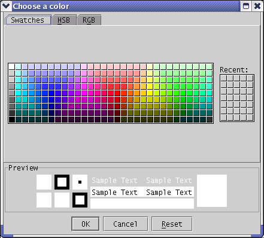

The right-click wizard is a nice, but invisible, feature of Arachnophilia.
When you are editing an HTML document, you find yourself doing the same things over and over again, and it occurs to you that these actions should be the easiest to activate. For example, you are looking at an HTML color code, and you want to:
- Find out what the actual color is for the code, and
- Perhaps change the color as well.
Here's an example. You are looking at this tag (notice the position of the "
|
" cursor):
<font color="#660|0ff">The Arachnophilia Right-Click Wizard</font>
— and you want to either preview the color or change it. In Arachnophilia, if the cursor is placed as shown, you can simply press the right mouse button, and a color selector dialog will appear:

Using this dialog, you can choose a new color and press "OK," or press "Cancel" to leave the color as it is.
Another action the wizard can take
is to detect a graphic filename in an image tag:
<img src="../ara|ch.png" width="96" height="76" alt="" align="middle">
In this case, if you press the right mouse button, the wizard will launch a file selection dialog with a graphic preview pane, and if you choose a new image file, the wizard will insert the new file name, create an appropriate relative path to the file, and finally it will change the image size tags to reflect the new image size. As you gain Web page design experience, you will appreciate the significance of always using relative paths to local files, and of having the image size tags correctly computed for new images.
A third action of the wizard
is to detect any local file type whatever in the same way, launch an appropriate file dialog, and compute the relative path to a selected file.
This leads to a rather important digression having to do with site organization. If you make links to images and other kinds of files, you must make sure those files will be uploaded onto your site along with your pages. The only reliable way to do this is to either move those files into your site directory and link to them there, or create subdirectories of your main site directory to contain those files. For example, it is common practice to have a subdirectory named "images" that contains all the site's graphic files.
It is a common beginner error to make a link to a local file that ends up not being uploaded to the Web site. Always move linked file into a directory that will be uploaded along with the Web pages themselves, for example by making a subdirectory of your main site directory.
The right-click wizard has one more feature
— if you hold down the Ctrl key, then press the right mouse button, the right-click wizard will provide a list of user-defined commands from a file located at C:UsersBill.Arachnophilia/ArachConf/CtrlRightClickList.txt. This is a convenient way to gain access to yet another list of macros that you can define any way you please.